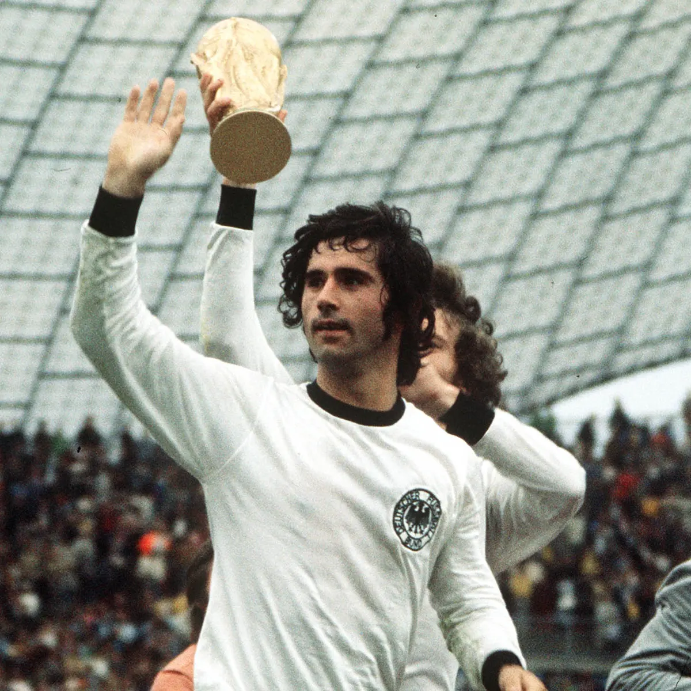

Gerd Müller

Gerhard Müller, conhecido como Gerd Müller, nasceu no dia 3 de Novembro de 1945,e foi um futebolista alemão e é amplamente considerado o melhor ponta de lança da história do futebol europeu, e um dos maiores do futebol mundial. Uma das qualidades que o diferenciava era a sua explosão e velocidade de movimentos em pequenos espaços e seu remate potente e preciso,sendo conhecido pelo mundo de "Der Bomber".
Muller é considerado uma lenda do futebol, destacando-se no Bayern Munique, onde jogou durante 15 anos e conquistou vários títulos, incluíndo o Euro 1972 e o Mundial 1974.
Depois da sua carreira futebolista acabar, ele começou a trabalhar na equípa técnica das reservas do Bayern Munique até 2014. Morreu no dia 15 de Agosto.
No início, Gerd Müller jogou pela equipa da sua infância, onde marcou 52 golos na 5ª divisão alemã. Continou a exibir as suas habilidades excecionais no futebol como jogador de futebol escolar, quando marcou 180 golos uma temporada (1963 – 64) na divisão juvenil do clube TSV 1861 Nördlingen. Essa conquista não passou despercebida, pois as potências do futebol da época, Bayern Munique e TSV 1860 Munique, queriam contratá-lo. Ele decidiu não assinar pelo no 1860 Munich porque tinha muitas estrelas na equipa, assim escolhendo o Bayern Munique como uma estratégia para garantir uma vaga no onze titular em 1964. Na sua primeira temporada, a equipa estava na segunda divisão, Gerd marcou 33 golos pela sua equipa e ajudou na subida para a Bundesliga em 1965. Com Müller na equipa, o Bayern Munique conquistou vários troféus, destacando a conquista de três Taça dos Campões Europeus, agora conhecido como Liga dos Campeões. Em 1979, Müller saiu do Bayern para assinar pelo Fort Lauderale Strikers, onde jogou dois anos, tendo acabado a carreira nos Estados Unidos
Gerd Müller não só se descatou em clubes, mas sim na seleção Alemã. Fez a sua estreia no futebol internacional em 1966 e acabou no dia 7 de Julho de 1974, na final do Mundial 1974, realizado na Alemanha, contra Países Baíxos por 2-1, com o Müller a fazer o último golo da partida e o último golo pelo seu país. Müller chegou a conquistar o Euro 1972.
Durante vários anos, o Müller foi recordista de melhor marcador da seleção Alemã, tendo o Miroslav Klose quebrado o seu recorde, e foi recordista de mais golos num ano, marcando 85 golos, mas foi quebrado pelo Lionel Messi em 2012
Gerd Müller jogou futebol profissional durante 18 anos, representado 3 clubes na sua carreira, marcando mais de 450 golos, e fez 62 jogos pela Alemanha Ocidental, marcando 68 golos em 8 anos que representou a seleção. Muller conta com o recorde de melhor marcador da Bundesliga e foi detetor do recorde de melhor marcador da selecão alemã e o jogador com mais golos num só ano.
Fora do campo, Gerd era muito conhecido pela sua paixão por aeromodelismo, uma paixão que o cativava até o dia da sua morte.
Também era muito apaixonado pela fotografia, chegando a ter uma exposição das suas fotografias no Museu de Pergamón, em Berlim.
| Estatística (Estatística completa) |
||
|---|---|---|
| Clubes | Jogos Jogados | Golos Marcados |
| Fort Lauderdale Strikers | 71 | 38 |
| Bayern München | 608 | 565 |
| TSV 1861 Nördlingen | 31 | 51 |
| Seleção Alemã | 62 | 68 |